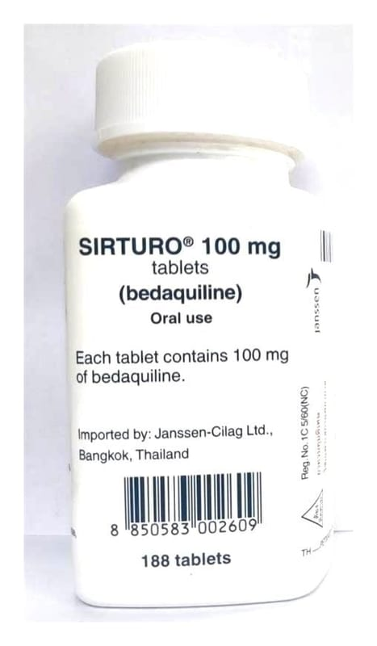

Sirturo 100 mg Tablet, 24 Adet

Ne için kullanılır
KT · Bölüm 1 SIRTURO, bir yüzünde "207” veüzerinde "t" ve diğer yüzünde "100" baskısı olan, 11 mm çapında, beyazla neredeyse beyaz arası, yuvarlak, bikonveks tablettir. Bir karton kutuda her biri 6 tablet içerecek şekilde 4 adet blister şerit bulunur. SIRTURO, bedakuilin etkin maddesini içeren bir tür antibiyotiktir. Antibiyotikler, hastalığa neden olan bakterileri öldüren ilaçlardır. Hastalık en azından rifampisin ve izoniazid gibi antibiyotiklere dirençli hale geldiğinde SIRTURO akciğerleri etkileyen tüberkülozu(verem)tedavi etmek için kullanılır. SIRTURO, tüberkülozu(verem)tedavi etmek için her zaman diğer ilaçlarla birlikte kullanılmalıdır. SIRTURO, yetişkinlerdeve adölesanlarda (12 yaş ila 18 yaş altındaki ve en az 30 kg ağırlığında)kullanılır.